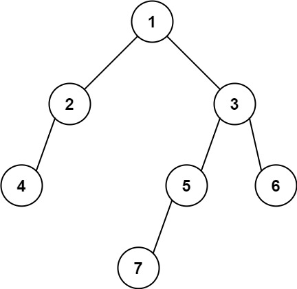

books / company-solutions / Tree
513. 找树左下角的值
| 题目信息 | 内容 |
|---|---|
| 难度 | 中等 |
| 核心模式 | BFS 逐层遍历，记录每层最左节点 |
| 时间复杂度 | O(n) |
| 空间复杂度 | O(w) |
题目与约束
给定一个二叉树的 根节点 root。
请找出该二叉树的 最底层 最左边 节点的值。
示例 1:

<strong>输入：</strong>root = [2,1,3]
<strong>输出：</strong>1
<strong>解释</strong><strong>：</strong>最后一行是 [1, 3]，因此最左边的值是 1。
示例 2:

<strong>输入：</strong>[1,2,3,4,null,5,6,null,null,7]
<strong>输出：</strong>7
<strong>解释：</strong>最后一层只有节点 7。
提示:
-
二叉树的节点个数的范围是
[1, 104] -
-231 <= Node.val <= 231 - 1
核心不变量
按层（BFS）从左到右遍历，每一层的第一个节点就是该层最左节点；持续用最新一层的这个值覆盖答案，遍历结束后答案就是最底层最左节点的值。
完整推导
思路推导
- “最底层”与“最左边”分别对应什么？
“最底层”要求深度最大，“最左边”要求同层中最靠左。二者合起来，就是最后一层、从左数第一个节点。只要能在逐层遍历时抓住“每层第一个”，再让它随层数更新即可。
- 为什么用 BFS 而不是 DFS？
BFS 天然按层推进，最后一轮循环处理的正好是最后一层，逻辑最直观。DFS 也能做（记录首次到达更深层时的节点，且先遍历左子树），但需要额外维护深度。
- 关键动作：每层开始先记下队头
在每层循环开始前，队列的队头正是该层最左节点。可以在层内 i == 0 时把 node.val 记入 result；由于每进入新一层都会覆盖，最终 result 保留的就是最底层的最左值。
- 小例子（[2,1,3]）
- 第 1 层：队头
2，result = 2；随后入队1, 3。 - 第 2 层：队头
1，result = 1；入队其子节点（无）。 - 队列空结束，返回
result = 1，正确。
Java 实现（findBottomLeftValue）
import java.util.LinkedList;
import java.util.Queue;
class Solution {
public int findBottomLeftValue(TreeNode root) {
Queue<TreeNode> queue = new LinkedList<>();
queue.offer(root);
int result = root.val; // 保证初始有值
while (!queue.isEmpty()) {
int size = queue.size(); // 当前层节点数，固定后遍历
for (int i = 0; i < size; i++) {
TreeNode node = queue.poll();
if (i == 0) {
result = node.val; // 本层最左节点，逐层覆盖
}
if (node.left != null) queue.offer(node.left);
if (node.right != null) queue.offer(node.right);
}
}
return result;
}
}
复杂度
- 时间：O(n)，每个节点入队、出队各一次。
- 空间：O(w)，队列中最多同时存放一层的节点，
w为树的最大宽度；最坏（满二叉树底层）为 O(n)。
易错点与扩展（面试高频考点）
- 把“最左”误解为“一直走左孩子”：若某层最左节点是某个右孩子，一路向左会走偏；必须按层记录每层第一个节点。
- 忘记每层重置：
result要每层用i == 0覆盖，否则只记住第一层。 - 动态
queue.size()陷阱：与层序遍历一样，必须先把本层大小存入局部变量再循环，边遍历边offer会让size变化。 - DFS 写法：可用前序遍历、记录
(depth, val)，只有遇到更深的层才更新答案（depth > maxDepth），并且要保证先访问左子树，才能取到同层最左。 - 空树：题目保证节点数
>= 1，故可省略判空；通用实现可加if (root == null) return 0;。
力扣原题
C++ 实现
class Solution {
public:
int findBottomLeftValue(TreeNode* root) {
queue<TreeNode*> que;
que.push(root);
int result = root->val;
while (!que.empty()) {
int size = que.size();
for (int i = 0; i < size; i++) {
TreeNode* node = que.front();
que.pop();
if (i == 0) result = node->val; // 本层最左
if (node->left) que.push(node->left);
if (node->right) que.push(node->right);
}
}
return result;
}
};
Python 实现
from collections import deque
class Solution:
def findBottomLeftValue(self, root: Optional[TreeNode]) -> int:
queue = deque([root])
result = root.val
while queue:
size = len(queue) # 固定本层节点数
for i in range(size):
node = queue.popleft()
if i == 0:
result = node.val # 本层最左节点
if node.left:
queue.append(node.left)
if node.right:
queue.append(node.right)
return result